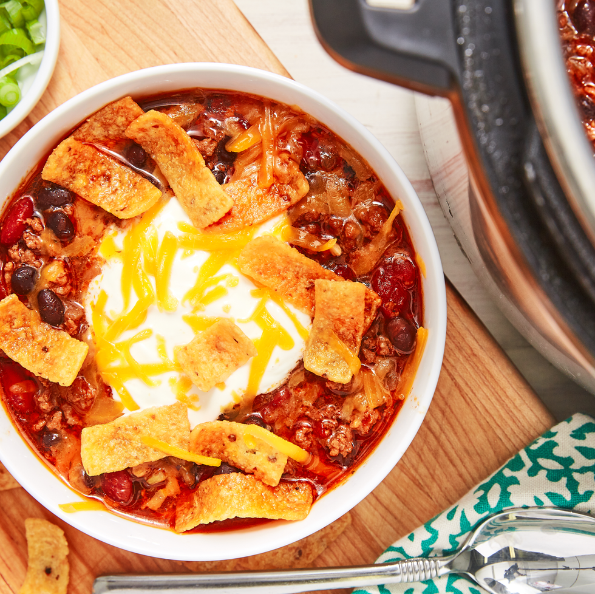

Chili Recipe

Description
A classic winter recipe that offers a near-blank template for experimentation
Add or omit any beans you like; ground turkey, pork or beef; or even a chipotle chili or two.
Ingredients
- 1 yellow onion
- 2 tbsp. tomato paste
- 1 1/2 pounds ground beef
- 2 cups beef broth
- 1 can kidney beans
- 1 can black beans
- cheddar cheese, for serving
Steps
- Cook onion until soft, 5 minutes, then add tomato paste stirring to combine.
- Add ground beef and cook, 7 minutes.
- Add broth, beans and spices. Pressure cook on high for 14 minutes.
- Slow release, then serve with shredded cheddar cheese.